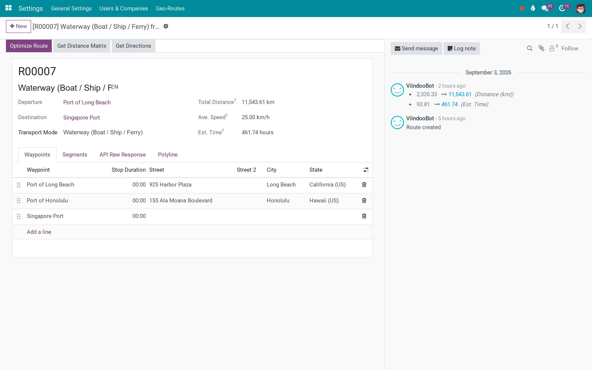

Odoo Community
Odoo Enterprise
Viindoo Cloud
One routing layer, any provider, any mode of transport
Routes built from waypoints, sections and segments, priced in distance and travel time per transport mode - road, rail, water or air - with the map provider behind an interface you can swap.
Viindoo Unified Routing Framework (technical name to_geo_routes) is an Odoo 19.0 app for Odoo Community and Odoo Enterprise and Viindoo Cloud, built for operations, planner, developer, administrator.
